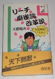

（31）リーチ麻雀論改革派

名著である（Ｈ２．３南雲堂4-523-51309-0）。
著者の天野晴夫氏は、東京でフリー雀荘「積み木」のオーナーでもある。この「積み木」では、下記のような符無しルールを採用している。
◆暗カンは一翻アップ。明カンは２つ以上で一翻アップ。（満貫まで）
翻
１
２
３
４〜５
(満貫)６〜７
（跳満)８〜９
(倍満)１０〜
(三倍満)親
1500
3000
6000
12000
18000
24000
36000
子
1000
2000
4000
8000
12000
16000
24000
麻雀は面白いが、符計算が覚えられないという人が多い。むかし「麻雀プロでも符計算ができないヤツがいる」なんて話を聞いたことがある。もちろんデマに決まっているだろうが、そういう話が出るくらい符計算は面倒ということなのだろう。
麻雀のおもしろさはゲームの内容にあるのであって、符計算のシステムにあるのではない。その証拠に、関東で一世を風靡したガリサンマには符計算のフの字もない。しかし一般リーチ麻雀は、いまだに旧来の符計算という盲腸を引きずっている。
その盲腸をばっさり除去したのが、「積み木」の符無しルール。「暗カンは一翻アップ。明カンは２つ以上で一翻アップ」としているところにまだ符計算の残滓を感じるが、基本的に小符廃止ルールを採用しているところが画期的である。
その天野氏が表した「立直麻雀論改革派」、もとより「戦術書ベスト10」にも選抜してあるが、普通の意味の戦術書とはちと異なる。ベスト10の寸評に「戦術論に横行するツキ・流れ論に真っ向から対決したした正論」とあるように、よくあるオカルトチックな戦術論を真っ向から批判した本である。
麻雀がかなりツキとか偶然性に左右されるゲームであることは誰でも承知している。判っていてもどうしようもないが、麻雀プロともなると、今後のツモ牌やツキの流れを読み切ったり、亜空間を通じて偶然性までコントロールできるらしい。そして、そのようなオカルトチックな能力をベースにした戦術書も数多く出版されている。
しかしそのような超能力は恐らく想像を絶する鍛錬の結果身に付くもので、普通のプレーヤーがそのような能力を身につけることは、ほとんど不可能と思われる。そこで「そんな、一般のプレーヤーがマネしようとしても出来ない能力をベースにした戦術論はおかしいではないか」と論じているのが、この本である。
全７章から成り立っているが、
第１章・麻雀にはツキも勘も流れもない。
第２章・なぜ麻雀界に超科学が暗躍するか。
第３章リーチ麻雀を語ろう。
第４章・人はいつも心の奴隷。
がメインテーマである。そして第１章から第３章までのオカルト技法に対する批判もまことに正鵠を突いているが、第４章・人はいつも心の奴隷は特にすばらしい。
第４章は一言で云うと、「克己心をやしないなさい」ということ。実はσ(-_-)もそれを心がけているつもり。しかし生来の気弱がたたって、なかなか克服できない.... 煎じて呑みたいので、ぜひ爪の垢を分けてもらいたい。(＾ー＾；
第５章では、そのようなオカルトチックや場当たり的な戦術論を、１８の具体例を挙げて批判している。まことにご無理じゃなくてごもっともな指摘ばかりで、目から鱗がぼろぼろ。
といっても、正直に言うと、この１８の具体例に対する批判すべてに大賛成というわけでもない....たとえば田村xプロの著書にあるという次のような例。
南の２局。ほぼ横一線状態で一歩リードしている北家、11巡目の手。ここへが出た。さてどうする、という問題。[どーする]といっても
(1)ロンする
(2)ポンする
(3)見送る
の３通りしかない。
ある実戦からとった例ということらしいが、プレーヤーは
しかし天野氏は「ロンする or 見送る（変化を目指す）手はあっても、ポンする（単騎待ちで三暗刻・対々和をめざす）手はない」と云う。たしかにロンする or 見送る手があるのはもちろんだけど、田村プロxの解説通り、ポンする手だって充分あると思う次第。
また小島プロaの戦術書からとったという次の例。
ツモ
子で７巡めという以外に、とくに状況設定はない。Ｋプロaは切りで７８９のサンシキを指向すべきと解説。しかし天野氏は、
「この手は７８９ではなく６７８、あるいは５６７のサンシキを考えるべき。そのためにはノータイムでをツモ切りする以外の手はない」と云う。
そして「を引いたら、なにはともあれ暗刻牌（
）の筋で危険な
を切る。
ここでを引いたら
待ち、高めサンシキの聴牌。
を引くのを待って
と振り替えて
を引いたら、
を切る。
こうなると素晴らしいメンタンピン・サンシキの一上聴ではないか。というのが天野氏の解説。
そりゃあたしかにすばらしい。しかし
の手から
への変化を考えて
これがもしσ(-_-)の手なら、ｋプロaの解説通り、やはり
そのあとでも引いた場合、Ｋプロaは、「嵌
しかしσ(-_-)は
なんだか「テンパイ即リー病」と反論されそうだが(^-^； 、特に状況設定は無いという設定で黙聴とする理由が思い浮かばない。もちろん
というわけで、具体例に対する批判すべてに大賛成というわけでもないけれど、もとよりそれは些末な話。この本の価値は第１章から第４章にあり、第６章の具体例の数々は補足資料みたいなもの。そんな部分の問題で、この本の価値が損なわれるようなことはない。ぜひの一読を勧める。
※平成２年出版の本だから、一般書店で入手することは困難である。しかし古書店などではときどき見かける。ひょっとして「積み木」でなら、まだ頒布しているかも。
＃「天野」と聞くと、日本麻雀の大先達、“天野大三”先生を思い出す。「晴夫」と聞くと、戦後の日本麻雀連盟をリードした、“手塚晴夫”先生を思い出す。「天野晴夫」となると二人の名前が合体している。なるへそ....